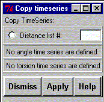

**************************************************************************
Copy time series widget
Leif Laaksonen CSC 1996
**************************************************************************
Copy time series array into the clipboard. The time series array can then be used in other Windows applications.
Select the type of time series array and the number of the distance, angle or torsion array to be copied to the clipboard.
So far no equivalent operation available

Line command: see copy command
**************************************************************************
LUL/1996
**************************************************************************